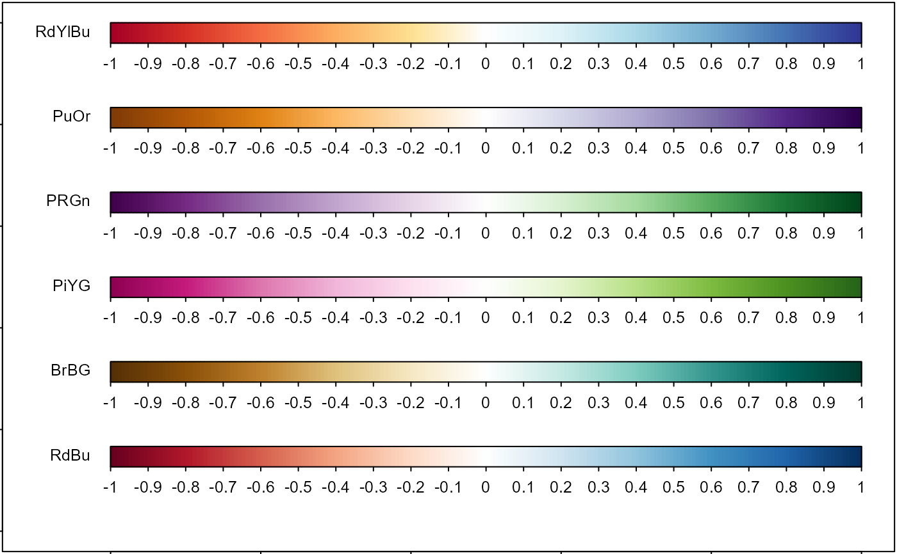
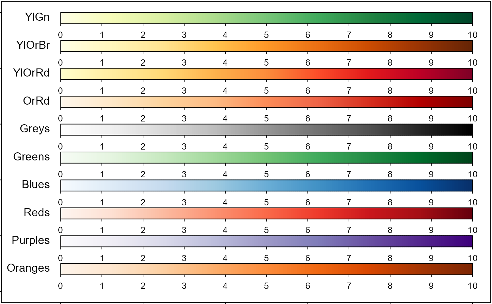
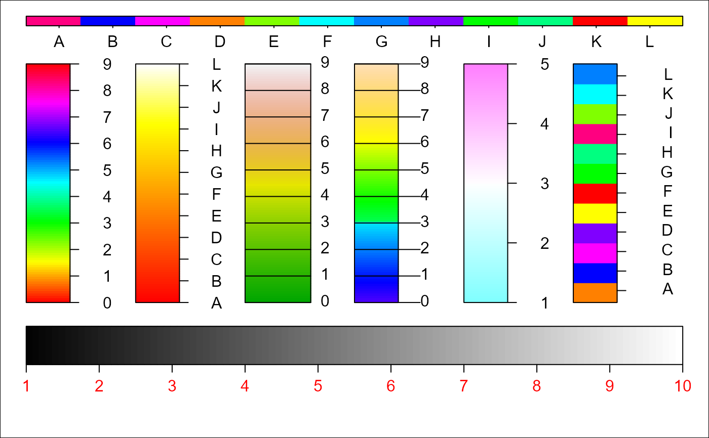

Draw color legend.
Arguments
- colbar
Vector, color of colbar.
- labels
Vector, numeric or character to be written.
- at
Numeric vector (quantile), the position to put labels. See examples for details.
- xlim
See in
plot- ylim
See in
plot- vertical
Logical, whether the colorlegend is vertical or horizon.
- ratio.colbar
The width ratio of colorbar to the total colorlegend (including colorbar, segments and labels).
- lim.segment
Vector (quantile) of length 2, the elements should be in [0,1], giving segments coordinates ranges. If the value is NULL or 'auto', then the ranges are derived automatically.
- align
Character, alignment type of labels,
'l'means left,'c'means center and'r'right. Only valid whenverticalisTRUE.- addlabels
Logical, whether add text label or not.
- ...
Additional arguments, passed to
plot
Examples
## diverging colors
par(mar = c(0, 0, 0, 0) + 0.1)
plot(0, xlim = c(-0.1, 1), ylim = c(0, 1), type = 'n')
col = c('RdBu', 'BrBG', 'PiYG', 'PRGn', 'PuOr', 'RdYlBu')
for(i in 1:length(col)) {
colorlegend(COL2(col[i]), -10:10/10, align = 'l', cex = 0.8, xlim = c(0, 1),
ylim = c(i/length(col)-0.1, i/length(col)), vertical = FALSE)
text(-0.01, i/length(col)-0.02, col[i], adj = 0.5, pos = 2, cex = 0.8)
}

## sequential colors
par(mar = c(0, 0, 0, 0) + 0.1)
plot(0, xlim = c(-0.1, 1), ylim = c(0, 1), type = 'n')
col = c('Oranges', 'Purples', 'Reds', 'Blues', 'Greens', 'Greys', 'OrRd',
'YlOrRd', 'YlOrBr', 'YlGn')
for(i in 1:length(col)) {
colorlegend(COL1(col[i]), 0:10, align = 'l', cex = 0.8, xlim = c(0, 1),
ylim = c(i/length(col)-0.1, i/length(col)), vertical = FALSE)
text(-0.01, i/length(col)-0.02, col[i], adj = 0.5, pos = 2)
}

## other examples to show colorlegend function
par(mar = rep(0, 4))
plot(0, xlim = c(0, 6), ylim = c(-0.5, 1.2), type = 'n')
colorlegend(rainbow(100), 0:9)
colorlegend(heat.colors(100), LETTERS[1:12], xlim = c(1, 2))
colorlegend(terrain.colors(100), 0:9, ratio.colbar = 0.6,
lim.segment = c(0, 0.6), xlim = c(2, 3), align = 'l')
colorlegend(topo.colors(100), 0:9, lim.segment = c(0, 0.6),
xlim = c(3, 4), align = 'l', offset = 0)
colorlegend(cm.colors(100), 1:5, xlim = c(4, 5))
colorlegend(sample(rainbow(12)), labels = LETTERS[1:12],
at = seq(0.05, 0.95, len = 12), xlim = c(5, 6), align = 'r')
colorlegend(colbar = grey(1:100 / 100), 1:10, col = 'red', align = 'l',
xlim = c(0, 6), ylim = c(-0.5, -0.1), vertical = FALSE)
colorlegend(sample(rainbow(12)),
labels = LETTERS[1:12], at = seq(0.05, 0.95, len = 12),
xlim = c(0, 6), ylim = c(1.1, 1.2), vertical = FALSE)
